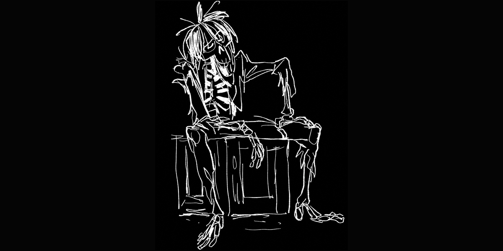
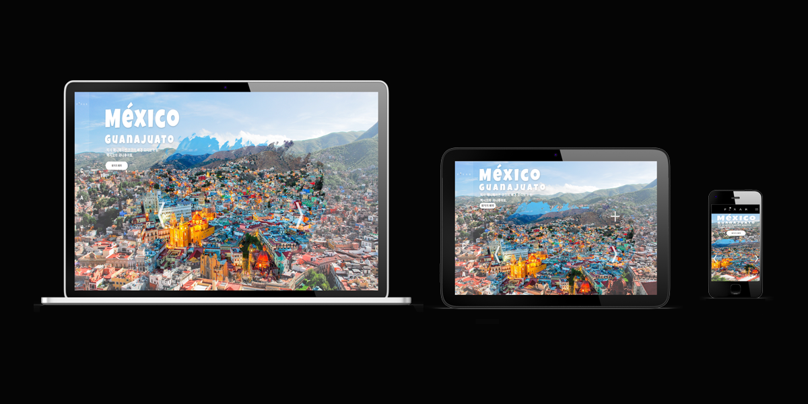

PIXAR
Project Schedule
2023.08.16 ~ 2023.08.31
2023년 8월 16일부터 2023년 8월 31일까지 15일간 총 네명의 팀원들과 함께 했던 팀 프로젝트 입니다.
팀 프로젝트에서 저는 팀원으로 세 번째 서브 페이지를 맡았고 CSS 미디어 쿼리와 jQuery를 이용하여 PC, 노트북, 모바일에서도 반응하는
반응형 풀 페이지를 제작하였습니다.


중앙에 구름 같은 버튼 슬라이드를 배치하여 좌, 우 버튼으로 쉽게 컨트롤 할 수 있도록 하였습니다.
또한 슬라이드 가운데에 커서를 얹으면 짧은 설명이 나오도록 하였으며 슬라이드 우측 상단에 플러스 버튼 클릭 시 큰 이미지로 팝업이 뜨도록 하였습니다.
좌측 상단에 위치한 패키지 예약 버튼 클릭시 백그라운드의 색상이 어두워지면서 팝업이 뜨도록 하였으며 인원 숫자에 따라 가격이 변동되도록 하였습니다.
또한 구매 버튼에 커서를 올렸을 때 색상이 변경하도록 구현하였고, 좌측 상단에 엑스 버튼 클릭 시 팝업이 사라지도록 하였습니다.
팀 프로젝트를 진행하며 제가 했던 생각은 잘 만드는 것도 중요하지만 팀과의 협력이 무엇보다 중요하다는 생각이었습니다.